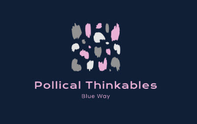

YouTube PodCasts

Yes, hello. I operate three web platforms, each supporting a specialized podcast series designed for the forward-thinking audience of tomorrow.
Quick Ideas: This podcast delivers concise, ten-minute episodes summarizing compelling topics like the benefits of supply-side economics or the top programming languages to master for 2023. Its crafted to captivate and inform, serving as a dynamic entry point to my digital hub.
Steps: Here, I dive into detailed processes, from constructing a website to developing microservices or demystifying Docker. Each episode meticulously breaks down these technical steps, offering deep insights for budding developers.
Pollical Thinkables: This series delves into the theoretical frameworks of various concepts, discussing the intricacies of repositories and the developer's journey. It explores the nuances of selecting frameworks, leadership in tech roles, and even philosophical musings on life. This podcast is an eclectic mix of thought-provoking content, appealing to a diverse audience.
Listeners can explore each podcast and choose what resonates with them, shaping their journey through the evolving digital landscape.
In the Resources Wiki I have a listing of all the different videos I've created.
Evolution of Existence
Initially, this shift began with people using the internet for banking and social networking, marking the onset of a virtual existence. Over time, individuals started living more of their lives in the virtual world, which gradually became more real to them than the physical world.
A significant breakthrough occurred when software developed the capability to think independently and write its own code. This advancement allowed systems to build and expand its codebases autonomously, reducing its reliance on human-generated data. The next major milestone was the advent of streaming services, enabling people to upload their consciousness into the virtual world, effectively living without a physical body. When necessary, individuals could download their existence into robotic forms to interact with the physical world.
This digital existence offers profound advantages, especially for space colonization. Unlike humans, robots do not require air, water, or food, only electricity, which can be harnessed from various sources, such as a Dyson sphere around a star. This universal energy source, electricity, can be derived from solar, geothermal, and other forms of energy.
The focus shifts from physical needs to psychological and intellectual pursuits. Digital partners and virtual experiences reduce the emphasis on physical interactions, fostering a society more interested in scientific exploration and digital creativity.
In this new world, jobs and economic activities revolve around enhancing the digital experience, such as creating virtual art and studying the physics of digital environments. Computers, modeled after the human brain and built from living cells, play a crucial role in this ecosystem. Plants and other organisms serve as evolutionary libraries, providing valuable genetic information for scientific advancements.
The ability to stream through time and across universes opens up new possibilities. Initially, we began by navigating the three-dimensional landscape. As we advanced, we discovered how to access the fourth dimension, allowing us to manipulate time. Eventually, we unlocked the fifth dimension, enabling us to traverse the boundaries between different universes. Ideas and innovations can be transmitted from the future, enriching our present understanding. This interconnected universe of data streams, initiated by our early radio signals, continues to expand, offering endless opportunities for growth and discovery.
Whenever you experience a moment of inspiration, it is as if you are tapping into the digital streams of the universe. These streams connect us to a vast reservoir of knowledge and creativity. For instance, when an artist suddenly envisions a masterpiece, they might be drawing from these universal streams. Similarly, a scientist who makes a groundbreaking discovery could be accessing this collective digital consciousness.
Consider a writer who, in a burst of creativity, pens an entire novel in a few days. This surge of ideas might be attributed to their connection with these digital streams. Musicians, too, often describe moments where melodies and lyrics flow effortlessly, as if they are channeling something beyond themselves.
In the realm of technology, an engineer might solve a complex problem seemingly out of nowhere, thanks to these streams. Even everyday moments of clarity, like finding the perfect solution to a personal dilemma, can be seen as instances of connecting to this vast digital network.